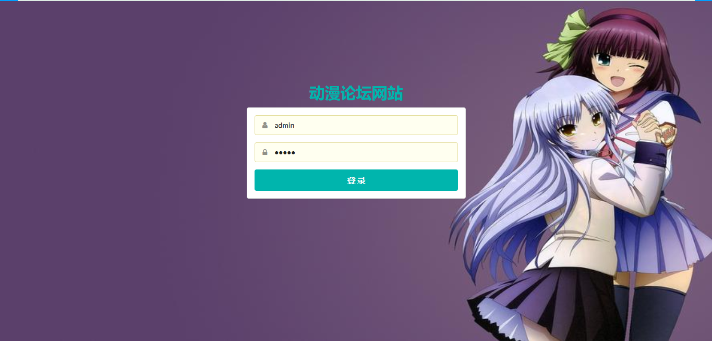
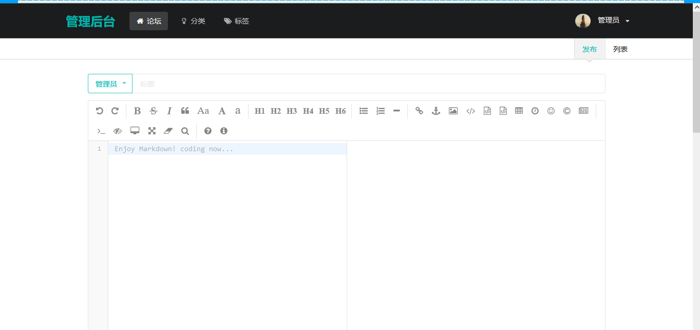
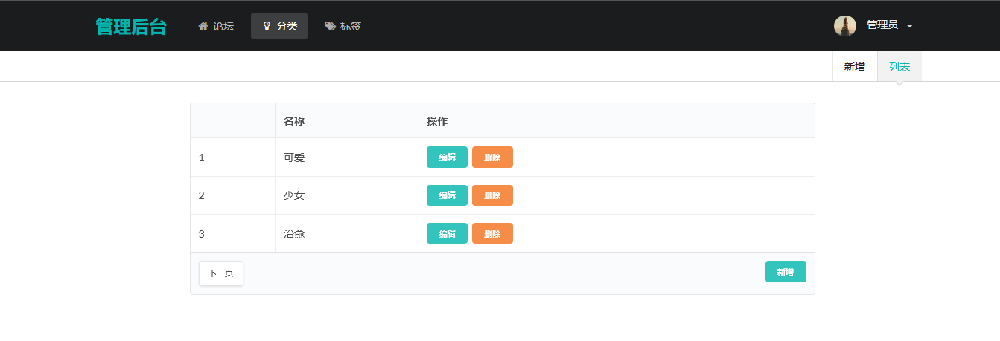
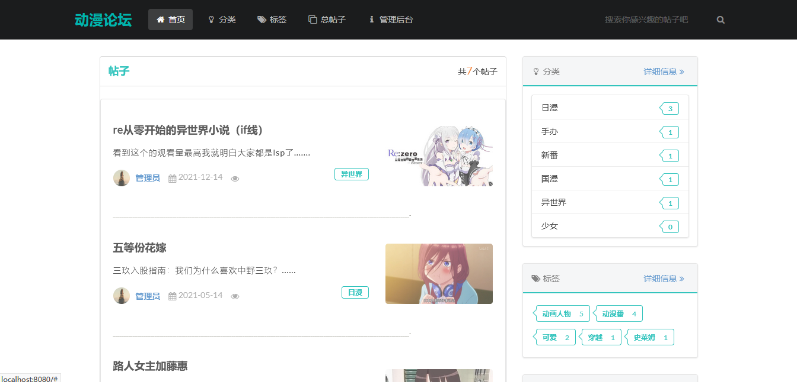
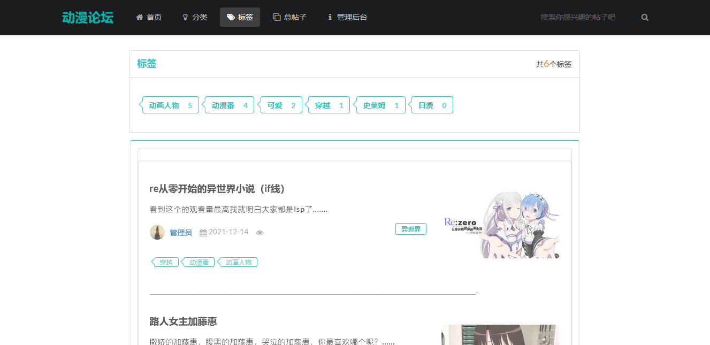
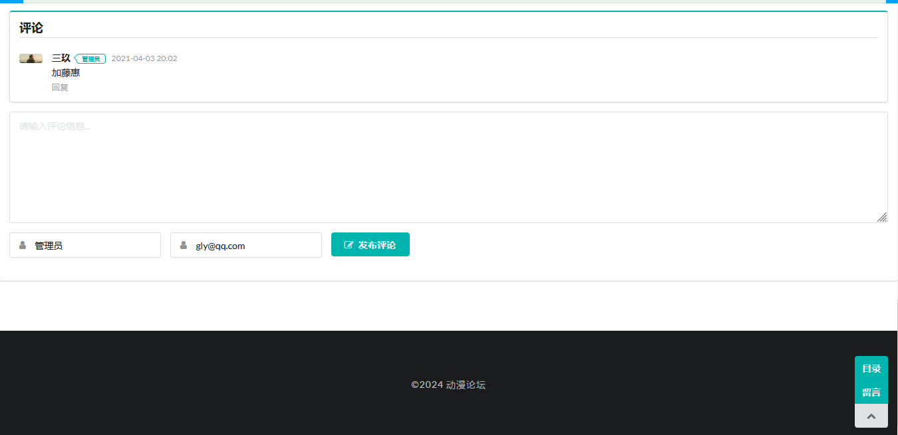

动漫论坛网站是由 SpringBoot+Mybatis 开发的，旅游网站分为前台和后台，前台为用户浏览，后台进行数据管理
后台功能如下：
前台功能如下：
用 idea 打开项目
在 idea 中配置 jdk 环境
配置 maven 环境并下载依赖
新建数据库，导入数据库文件
在 application.properties 文件中将数据库账号密码改成自己本地的
启动运行，浏览器访问
http://localhost:8080
，管理员账号密码 admin/123456





